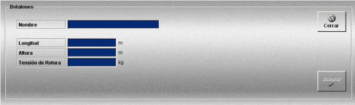

Botalones
La creación y edición de botalones se realiza mediante la siguiente ventana.

Esta ventana permite definir los botalones que podrán ser añadidos a las unidades participantes en los ejercicios y que son necesarios para poder ejecutar el arrastre con tangones. Cada buque sólo puede contener un botalón.
Para cada botalón se definen los siguientes datos:
Nombre: Nombre del botalón.
Formato: caracteres alfanuméricos.
Longitud: Distancia desde el extremo del botalón hasta el lateral del buque.
Unidades: metros
Rango: 0.0- 30.00
Altura: Altura del botalón.
Unidades: metros
Rango: 0.0- 30.00
Tensión de Rotura: Tensión máxima que soporta el botalón.
Unidades: kilogramos
Rango: 0.0- 1000000.00